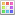

Mebiusbox 2.x ユーザーガイド
機能一覧
新規
| 新規ファイル | 新規にファイルを作成します。 | create-item | |
|---|---|---|---|
| 新規フォルダ | 新規にフォルダを作成します。 | create-directory | |
| 新規複数ファイル | 新規に複数のファイルを作成します。 | create-items | |
| 新規複数フォルダ | 新規に複数のフォルダを作成します。 | create-directories |
整理
| ゴミ箱へ削除 | アイテムをゴミ箱へ削除します。 | recycle-item | |
|---|---|---|---|
| 削除 | アイテムを削除します。 | delete-item | |
| 完全削除 | 特殊な方法でアイテムを削除し、復元できないようにします。 | shred-item | |
| ゴミ箱を空にする | ゴミ箱に入っているファイルを削除します。 | empty-recyclebin | |
| コピー先 | コピー先を指定してアイテムをコピーします。 | copy-to | |
| 移動先 | 移動先を指定してアイテムを移動します。 | move-to | |
| 複製 | アイテムを複製します。 | duplicate-item | |
| 名前の変更 | アイテムの名前を変更します。 | rename-item | |
 |
名前の一括変更 | 複数アイテムの名前をまとめて変更します。 | rename-items |
| 属性変更 | アイテムの属性を変更します。 | modify-item-attribute | |
| 日付更新 | アイテムの日付を更新します。 | touch | |
| タグ編集 | アイテムのタグを編集します。 | tag | |
| パーミッション変更 | アイテムのパーミッションを変更します。（ＦＴＰフォルダ限定） | modify-item-permission |
書庫
| 圧縮 | 書庫ファイルを作成します。 | pack | |
|---|---|---|---|
| 解凍 | 書庫ファイルを解凍します。 | unpack | |
| 解凍先... | 書庫ファイルの解凍先を指定して、解凍します。 |
ナビゲーション
| アドレスを開く | アドレスを指定して、フォルダを開きます。 | open-tab | |
|---|---|---|---|
 |
新規タブ | 新しいタブを開きます。 | new-tab |
| タブを閉じる | タブを閉じます。 | close-tab | |
| 全てのタブを閉じる | 開いている全てのタブを閉じます。 | close-all-tabs | |
| タブ選択 | タブを選択して、アクティブにします。 | goto-tab | |
| 次のタブへ | 次のタブへ移動 | next-tab | |
| 前のタブへ | 前のタブへ移動 | prev-tab |
編集
| カット | 選択アイテムを削除し、クリップボードに貼り付けます | cut | |
|---|---|---|---|
| コピー | 選択アイテムをクリップボードにコピーします。 | copy | |
| ペースト | クリップボードから貼り付けます。 | paste | |
| 更新 | フォルダを更新します。 | refresh | |
| 検索 | アイテムを検索します。 | qsearch | |
| 次を検索 | 次のアイテムを検索します。 | search-next | |
| インクリメンタルサーチ | インクリメンタルサーチをします。 | isearch | |
| 選択 | アイテムを選択します。 | select-item | |
| 選択解除 | アイテムの選択を解除します。 | unselect-item | |
| すべて選択 | すべてのアイテムを選択します。 | select-all-items | |
| すべて選択解除 | すべてのアイテムを選択解除します。 | unselect-all-items | |
| 選択切替 | フォーカスアイテムの選択状態を切替ます。 | toggle-item-selection | |
| マスク... | アイテムをマスク選択します。 | selection-mask |
表示
| ビューアを起動 | 設定にもとづいて、ビューアを起動します。 | ||
|---|---|---|---|
| テキストビューア | テキストビューアを表示します。 | ||
| バイナリビューア | バイナリビューアを表示します。 | ||
| Web | ウェブブラウザを表示します。 | ||
| WindowsMediaPlayer | Windows Media Player を表示します。 | ||
| PDFビューア | PDF ビューアを表示します。 | ||
| 画像ビューア | 画像ビューアを表示します。 | ||
| ビューアを閉じる | ビューアを閉じます。 | ||
| ズーム | ズームバーを表示します。 | view-zoom |
その他
| コマンド入力 | コマンドをダイレクトで入力します。 | input-command | |
|---|---|---|---|
| エクスプローラで開く | Windows のエクスプローラを開きます。 | open-explorer | |
| コマンドプロンプトを開く | コマンドプロンプトを開きます。 | open-prompt | |
|  | テーマ管理 | テーマ管理画面を開きます。 | manage-theme |
| フォント設定 | フォント設定画面を開きます。 | ||
| フィルター管理 | フィルター管理画面を表示します。 | ||
| スマートタグ管理 | スマートタグ管理画面を表示します。 | ||
| 外部プログラム管理 | 外部プログラム管理画面を表示します。 | ||
| 仮想フォルダ管理 | 仮想フォルダ管理画面を表示します。 | ||
| お気に入り管理 | お気に入り管理画面を表示します。 | ||
| キーカスタマイズ | キーカスタマイズ画面を表示します。 | ||
| コマンド一覧 | コマンド一覧を表示します。 | ||
| オプション | オプション設定画面を表示します。 | ||
 |
オンラインマニュアル | オンラインマニュアルを開きます。 | |
| mebiusbox software 公式サイト | mebiusbox software 公式サイトを開きます。 | ||
| ebiusbox software サポート | mebiusbox software サポートサイトを開きます。 | ||
| ソフトウェアの更新を確認 | Mebiusbox2 の更新を確認します。 |